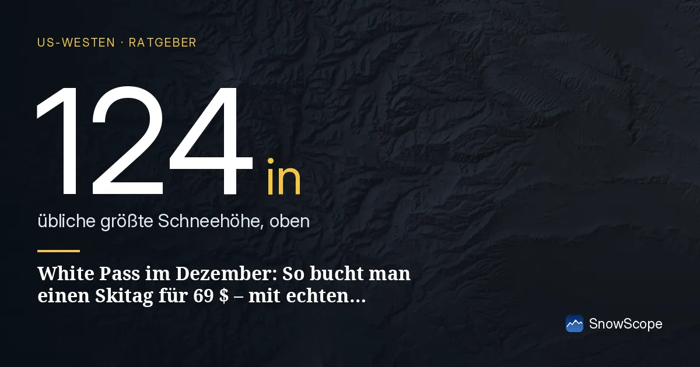

White Pass im Dezember: So bucht man einen Skitag für 69 $ – mit echten Schneechancen
White Pass belohnt Skifahrer, die vorausplanen und sich für Wochentage entscheiden. Die zweite Dezemberhälfte ist der Zeitpunkt, an dem die Schneechancen deutlich in deine Gunst kippen, und dann bleiben die günstigsten Online-Tickets auch erreichbar, wenn du rechtzeitig buchst.
Die Live-Schneeprognose für White Pass Ski Area in der SnowScope-AppSchneehöhen, Pulverschnee-Alarme und 3D-Karte, gratis.
Wo White Pass liegt und warum es günstiger ist
White Pass liegt an der US-12 östlich von Packwood, im Schatten des Mount Rainier. Das Skigebiet erstreckt sich von etwa 1.367 m in der Talstation bis 1.987 m an der Bergstation, mit 8 Liften und etwa 36 km Pisten. Es gibt kein Skidorf, was die Liftpreise niedriger hält als bei den großen Namen des Pazifischen Nordwestens.
Der Schnee kommt hier früh an. In einem typischen Winter erreicht Dauerschnee Mitte Oktober die Mittelhang. Dieser Vorsprung ist wichtig für die Zuverlässigkeit.

Wie dynamische Preisgestaltung funktioniert und wann du 69 $ fixierst
White Pass verkauft Online-Tickets mit Preisen, die steigen, je mehr dein gewählter Termin gebucht wird. Die niedrigste Stufe liegt bei 69 $ für Off-Peak-Tage (Montag bis Donnerstag, keine Feiertage) und 89 $ für Peak-Tage (Freitag bis Sonntag, Feiertage). Die Preise steigen, je näher dein Termin rückt, und erreichen 99 $ Off-Peak und 119 $ Peak.
Die Strategie ist einfach: Wähle einen Wochentag mindestens einige Tage im Voraus und buche online. Wenn du wartest, bis ein Schneebericht kommt, und dann versucht, einen Dezember-Samstag zu buchen, zahlst du in der höheren Spanne.

Dezember Woche für Woche: Wann die Schneechancen steigen
Vergangene Winter zeigen einen klaren Anstieg der Zuverlässigkeit durch den Dezember. In der Woche vom 30. November bis 6. Dezember hatten 74 % der Winter guten Schnee (wöchentlich durchschnittlich 50 cm oder mehr) auf Mittelhang. Das steigt auf 85 % in der folgenden Woche, 91 % vom 14. bis 20. Dezember und 96 % in der letzten Woche vor Neujahr.
Am typischen 15. Dezember liegt Mittelhang (etwa 1.677 m) bei 102 cm, die Bergstation bei 107 cm. Am 31. Dezember hat Mittelhang 151 cm aufgebaut. Auch in einem schwachen Winter (eins von zehn) bringt der 15. 42 cm zu Mittelhang – genug für präparierte Pisten, aber nicht für Tiefschnee.
Wie White Pass gegen Mt. Baker und Timberline abschneidet
Mt. Baker im Nordwesten hat Mitte Dezember tiefere Schneehöhe: 116 cm sind am 15. typisch. Aber Mt. Baker verkauft Tickets nur am Besuchstag, ohne Frühbucherrabatt. Rechne mit 98,80 $ Off-Peak oder 115,42 $ an Peak-Tagen.
Timberline am Mount Hood berechnet 129 $ Off-Peak und 161 $ an Peak-Tagen für einen ganzen Tag. White Pass unterbietet beide, wenn du einen Off-Peak-Wochentag früh buchst. Mt. Baker hat mehr Schnee als White Pass, kostet aber mehr und zwingt dich, morgens vor der Fahrt zu entscheiden.
Der Indy Pass: Mehrgebiet-Mathematik
White Pass ist seit der Saison 2026-27 Mitglied im Indy-Pass-Netzwerk mit über 300 Skigebieten. Der Indy Base Pass kostet 419 $ für Erwachsene und gewährt zwei Ganztagestickets bei jedem Mitgliedsgebiet, mit einigen Sperrtagdaten. Der Indy+ Pass kostet 469 $ und hebt die Sperrtage auf.
Wenn du diesen Winter drei oder vier Ausflüge zu kleineren Bergen planst – White Pass mit Stopps bei anderen Mitgliedsgebieten kombiniert – kann der Pass bessere Wertung bieten als einzelne 69-$ bis 99-$-Tage zu buchen. Für einen oder zwei Ausflüge ist Online-Buchung zu 69 $ Off-Peak wahrscheinlich günstiger.
Tipps für Skifahrer
- Buche einen Wochentag mindestens einige Tage im Voraus, um den 69-$-Bodenpreis zu fixieren.
- Wenn dein Zeitplan es erlaubt, ziele auf die Woche vom 14. bis 20. Dezember oder später: Vergangene Winter zeigen 91 bis 96 % der Saisons mit gutem Schnee dann, gegenüber 74 % Anfang Dezember.
- Bevor du fährst, überprüfe den US-12-Pass-Bericht: Die Strecke kann während Stürmen gesperrt sein oder Ketten erfordern.
- Letzter Winter war hier ungewöhnlich dünn, daher lass ihn nicht deine Erwartungen prägen. Schau dir die SnowScope-Karte die Woche vor deinem Besuch an, um zu sehen, wie diese Saison läuft.
Zu diesen Zahlen
Die Schneehöhen der Skigebiete sind der meiste Schnee in den oberen Hängen am angegebenen Tag; es sind Schätzungen für eine Fläche, keine Messung an einem Punkt. Prognosen können sich ändern. Lies vor dem Freeriden immer den offiziellen Lawinenlagebericht.
Offizielle Lawinenlageberichte: avalanche.org (US national portal)
Diesen Bericht zitieren
Für Forschung, Lehre oder Presse: Zahlen und Grafiken sind unter CC BY 4.0 mit dieser Quellenangabe frei nutzbar.
SnowScope (2026), White Pass im Dezember: So bucht man einen Skitag für 69 $ – mit echten Schneechancen, https://snowscope.app/blog/de/2026/11/white-pass-december-skiing-budget-2026.html, abgerufen am 2026-11-14
SnowScope (Atlas Labs). (2026, November 14). White Pass im Dezember: So bucht man einen Skitag für 69 $ – mit echten Schneechancen. SnowScope snow reports. https://snowscope.app/blog/de/2026/11/white-pass-december-skiing-budget-2026.html
BibTeX
@misc{snowscope2026whitepassdecemberskiingb,
author = {{SnowScope (Atlas Labs)}},
title = {White Pass im Dezember: So bucht man einen Skitag für 69 $ – mit echten Schneechancen},
year = {2026},
month = nov,
howpublished = {\url{https://snowscope.app/blog/de/2026/11/white-pass-december-skiing-budget-2026.html}},
note = {Published 2026-11-14 17:07 UTC; accessed 2026-11-14}
}· CC BY 4.0 · Methoden, Daten und Werkzeuge →
White Pass Ski Area: Schnee und Temperatur nach Höhe, dieser Winter vs letzter (Werkzeuge) →
White Pass Ski Area folgen
Gratis: eine Nachricht, wenn Neuschnee kommt, und jeden Morgen die Vorhersage.